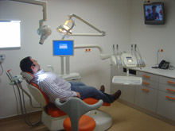

Especialidades no Hospital D. Manuel de Aguiar atravé de consulta externa
- Acupunctura
- Cardiologia
- Cirurgia Geral
- Cirurgia Plástica e Reconstrutiva
- Cirurgia Vascular
- Dermatologia
- Diabetes
- Dietista
- Endocrinologia
- Estomatologia / Medicina Dentária
- Gastrenterologia
- Ginecologia
- Medicina Desportiva
- Medicina Física e de Reabilitação
- Mesoterapia
- Neurocirurgia
- Neurologia
- Oftalmologia adulto e infantil
- Ortopedia
- Otorrinolaringologia
- Pneumologia
- Psicologia Clínica
- Psiquiatria
- Reumatologia
- Urologia
Telefone geral:
244 100 009
Para marcações
– número directo 244 106 201
Formulário de marcações online
